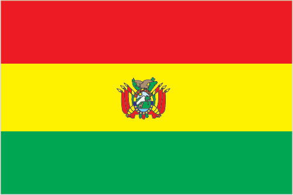
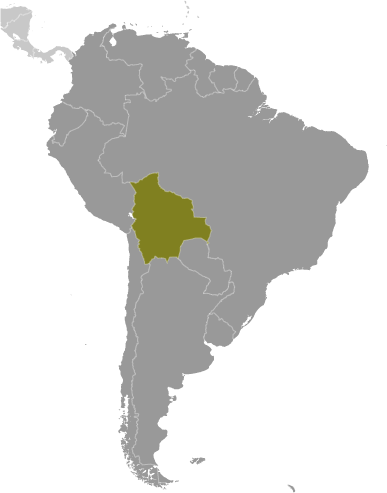
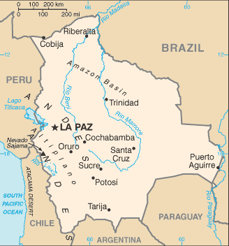

South America :: BOLIVIA
Introduction :: BOLIVIA
-
Bolivia, named after independence fighter Simon BOLIVAR, broke away from Spanish rule in 1825; much of its subsequent history has consisted of a series of coups and countercoups, with the last coup occurring in 1978. Democratic civilian rule was established in 1982, but leaders have faced difficult problems of deep-seated poverty, social unrest, and illegal drug production.In December 2005, Bolivians elected Movement Toward Socialism leader Evo MORALES president - by the widest margin of any leader since the restoration of civilian rule in 1982 - after he ran on a promise to change the country's traditional political class and empower the nation's poor, indigenous majority. In December 2009 and October 2014, President MORALES easily won reelection. His party maintained control of the legislative branch of the government, which has allowed him to continue his process of change. In February 2016, MORALES narrowly lost a referendum to approve a constitutional amendment that would have allowed him to compete in the 2019 presidential election. Despite the loss, MORALES has already been chosen by his party to run again in 2019, via a still-undetermined method for him to appear on the ballot.
Geography :: BOLIVIA
-
Central South America, southwest of Brazil17 00 S, 65 00 WSouth Americatotal: 1,098,581 sq kmland: 1,083,301 sq kmwater: 15,280 sq kmcountry comparison to the world: 29slightly less than three times the size of Montanatotal: 7,252 kmborder countries (5): Argentina 942 km, Brazil 3,403 km, Chile 942 km, Paraguay 753 km, Peru 1,212 km0 km (landlocked)none (landlocked)varies with altitude; humid and tropical to cold and semiaridrugged Andes Mountains with a highland plateau (Altiplano), hills, lowland plains of the Amazon Basinmean elevation: 1,192 melevation extremes: lowest point: Rio Paraguay 90 mhighest point: Nevado Sajama 6,542 mtin, natural gas, petroleum, zinc, tungsten, antimony, silver, iron, lead, gold, timber, hydropoweragricultural land: 34.3%arable land 3.6%; permanent crops 0.2%; permanent pasture 30.5%forest: 52.5%other: 13.2% (2011 est.)3,000 sq km (2012)a high altitude plain in the west between two cordillera of the Andes, known as the Altiplano, is the focal area for most of the population; a dense settlement pattern is also found in and around the city of Santa Cruz, located on the eastern side of the Andesflooding in the northeast (March to April)volcanism: volcanic activity in Andes Mountains on the border with Chile; historically active volcanoes in this region are Irruputuncu (5,163 m), which last erupted in 1995, and the Olca-Paruma volcanic complex (5,762 m to 5,167 m)the clearing of land for agricultural purposes and the international demand for tropical timber are contributing to deforestation; soil erosion from overgrazing and poor cultivation methods (including slash-and-burn agriculture); desertification; loss of biodiversity; industrial pollution of water supplies used for drinking and irrigationparty to: Biodiversity, Climate Change, Climate Change-Kyoto Protocol, Desertification, Endangered Species, Hazardous Wastes, Law of the Sea, Marine Dumping, Ozone Layer Protection, Ship Pollution, Tropical Timber 83, Tropical Timber 94, Wetlandssigned, but not ratified: Environmental Modification, Marine Life Conservationlandlocked; shares control of Lago Titicaca, world's highest navigable lake (elevation 3,805 m), with Peru
People and Society :: BOLIVIA
-
11,138,234 (July 2017 est.)country comparison to the world: 81noun: Bolivian(s)adjective: Bolivianmestizo (mixed white and Amerindian ancestry) 68%, indigenous 20%, white 5%, cholo/chola 2%, black 1%, other 1%, unspecified 3% ; 44% of respondents indicated feeling part of some indigenous group, predominantly Quechua or Aymaranote: results among surveys vary based on the wording of the ethnicity question and the available response choices; the 2001 national census did not provide "mestizo" as a response choice, resulting in a much higher proportion of respondents identifying themselves as belonging to one of the available indigenous ethnicity choices; the use of "mestizo" and "cholo" varies among response choices in surveys, with surveys using the terms interchangeably, providing one or the other as a response choice, or providing the two as separate response choices (2009 est.)Spanish (official) 60.7%, Quechua (official) 21.2%, Aymara (official) 14.6%, foreign languages 2.4%, Guarani (official) 0.6%, other native languages 0.4%, none 0.1%note: Bolivia's 2009 constitution designates Spanish and all indigenous languages as official; 36 indigenous languages are specified, including some that are extinct (2001 est.)Roman Catholic 76.8%, Evangelical and Pentecostal 8.1%, Protestant 7.9%, other 1.7%, none 5.5% (2012 est.)Bolivia ranks at or near the bottom among Latin American countries in several areas of health and development, including poverty, education, fertility, malnutrition, mortality, and life expectancy. On the positive side, more children are being vaccinated and more pregnant women are getting prenatal care and having skilled health practitioners attend their births. Bolivia's income inequality is the highest in Latin America and one of the highest in the world. Public education is of poor quality, and educational opportunities are among the most unevenly distributed in Latin America, with girls and indigenous and rural children less likely to be literate or to complete primary school. The lack of access to education and family planning services helps to sustain Bolivia's high fertility rate - approximately three children per woman. Bolivia's lack of clean water and basic sanitation, especially in rural areas, contributes to health problems.Almost 7% of Bolivia's population lives abroad, primarily to work in Argentina, Brazil, Spain, and the United States. In recent years, more restrictive immigration policies in Europe and the United States have increased the flow of Bolivian emigrants to neighboring Argentina and Brazil.0-14 years: 31.85% (male 1,807,735/female 1,739,763)15-24 years: 19.46% (male 1,098,097/female 1,069,950)25-54 years: 37.48% (male 2,041,866/female 2,133,065)55-64 years: 5.9% (male 303,409/female 353,598)65 years and over: 5.3% (male 260,424/female 330,327) (2017 est.)total dependency ratio: 63.7youth dependency ratio: 53.1elderly dependency ratio: 10.6potential support ratio: 9.4 (2015 est.)total: 24.3 yearsmale: 23.6 yearsfemale: 25 years (2017 est.)country comparison to the world: 1621.51% (2017 est.)country comparison to the world: 7722 births/1,000 population (2017 est.)country comparison to the world: 736.4 deaths/1,000 population (2017 est.)country comparison to the world: 147-0.5 migrant(s)/1,000 population (2017 est.)country comparison to the world: 126a high altitude plain in the west between two cordillera of the Andes, known as the Altiplano, is the focal area for most of the population; a dense settlement pattern is also found in and around the city of Santa Cruz, located on the eastern side of the Andesurban population: 69.3% of total population (2017)rate of urbanization: 2.11% annual rate of change (2015-20 est.)Santa Cruz 2.107 million; LA PAZ (capital) 1.816 million; Cochabamba 1.24 million; Sucre (constitutional capital) 372,000 (2015)at birth: 1.05 male(s)/female0-14 years: 1.04 male(s)/female15-24 years: 1.03 male(s)/female25-54 years: 0.95 male(s)/female55-64 years: 0.86 male(s)/female65 years and over: 0.79 male(s)/femaletotal population: 0.98 male(s)/female (2016 est.)21.2 yearsnote: median age at first birth among women 25-29 (2008 est.)206 deaths/100,000 live births (2015 est.)country comparison to the world: 51total: 35.3 deaths/1,000 live birthsmale: 38.7 deaths/1,000 live birthsfemale: 31.7 deaths/1,000 live births (2017 est.)country comparison to the world: 52total population: 69.5 yearsmale: 66.7 yearsfemale: 72.4 years (2017 est.)country comparison to the world: 1612.63 children born/woman (2017 est.)country comparison to the world: 7360.5% (2008)6.3% of GDP (2014)country comparison to the world: 990.47 physicians/1,000 population (2011)1.1 beds/1,000 population (2012)improved:urban: 96.7% of populationrural: 75.6% of populationtotal: 90% of populationunimproved:urban: 3.3% of populationrural: 24.4% of populationtotal: 10% of population (2015 est.)improved:urban: 60.8% of populationrural: 27.5% of populationtotal: 50.3% of populationunimproved:urban: 39.2% of populationrural: 72.5% of populationtotal: 49.7% of population (2015 est.)0.3% (2016 est.)country comparison to the world: 8219,000 (2016 est.)country comparison to the world: 78<1000 (2016 est.)degree of risk: very highfood or waterborne diseases: bacterial diarrhea and hepatitis Avectorborne diseases: dengue fever, malaria, and yellow fevernote: active local transmission of Zika virus by Aedes species mosquitoes has been identified in this country (as of August 2016); it poses an important risk (a large number of cases possible) among US citizens if bitten by an infective mosquito; other less common ways to get Zika are through sex, via blood transfusion, or during pregnancy, in which the pregnant woman passes Zika virus to her fetus (2016)20.2% (2016)country comparison to the world: 1043.6% (2012)country comparison to the world: 957.3% of GDP (2014)country comparison to the world: 24definition: age 15 and over can read and writetotal population: 92.5%male: 96.5%female: 88.6% (2015 est.)total: 14 yearsmale: 14 yearsfemale: 14 years (2007)total: 6.9%male: 6.4%female: 7.6% (2013 est.)country comparison to the world: 122
Government :: BOLIVIA
-
conventional long form: Plurinational State of Boliviaconventional short form: Bolivialocal long form: Estado Plurinacional de Bolivialocal short form: Boliviaetymology: the country is named after Simon BOLIVAR, a 19th-century leader in the South American wars for independencepresidential republicname: La Paz (administrative capital); Sucre (constitutional [legislative and judicial] capital)geographic coordinates: 16 30 S, 68 09 Wtime difference: UTC-4 (1 hour ahead of Washington, DC, during Standard Time)9 departments (departamentos, singular - departamento); Beni, Chuquisaca, Cochabamba, La Paz, Oruro, Pando, Potosi, Santa Cruz, Tarija6 August 1825 (from Spain)Independence Day, 6 August (1825)many previous; latest drafted 6 August 2006 - 9 December 2008, approved by referendum 25 January 2009, effective 7 February 2009; amended 2013 (2015)civil law system with influences from Roman, Spanish, canon (religious), French, and indigenous lawhas not submitted an ICJ jurisdiction declaration; accepts ICCt jurisdictioncitizenship by birth: yescitizenship by descent: yesdual citizenship recognized: yesresidency requirement for naturalization: 3 years18 years of age, universal and compulsorychief of state: President Juan Evo MORALES Ayma (since 22 January 2006); Vice President Alvaro GARCIA Linera (since 22 January 2006); note - the president is both chief of state and head of governmenthead of government: President Juan Evo MORALES Ayma (since 22 January 2006); Vice President Alvaro GARCIA Linera (since 22 January 2006)cabinet: Cabinet appointed by the presidentelections/appointments: president and vice president directly elected on the same ballot by absolute majority popular vote in 2 rounds if needed for a 5-year term (eligible for a second term); election last held on 12 October 2014 (next to be held in 2019); note - a presidential candidate wins an election one of 3 wayselection results: Juan Evo MORALES Ayma reelected president; percent of vote - Juan Evo MORALES Ayma (MAS) 61%; Samuel DORIA MEDINA Arana (UN) 24.5%; Jorge QUIROGA Ramirez (POC) 9.1%; other 5.4%description: bicameral Plurinational Legislative Assembly or Asamblea Legislativa Plurinacional consists of the Chamber of Senators or Camara de Senadores (36 seats; members directly elected in multi-seat constituencies by proportional representation vote; members serve 5-year terms) and the Chamber of Deputies or Camara de Diputados (130 seats; 70 members directly elected in single-seat constituencies by simple majority vote, 53 indirectly elected in single-seat constituencies by proportional representation vote, and 7 - apportioned to non-contiguous, rural areas in 7 of the 9 states - directly elected in single-seat constituencies by simple majority vote; members serve 5-year terms)elections: Chamber of Senators and Chamber of Deputies - last held on 12 October 2014 (next to be held in 2019)election results: Chamber of Senators - percent of vote by party - NA; seats by party - MAS 25, UD 9, PDC 2; Chamber of Deputies - percent of vote by party - NA; seats by party - MAS 88, UD 32, PDC 10highest court(s): Supreme Court or Tribunal Supremo de Justicia (consists of 12 judges or ministros organized into civil, penal, social, and administrative chambers); Plurinational Constitutional Tribunal (consists of 7 primary and 7 alternate magistrates); Plurinational Electoral Organ (consists of 7 members and 6 alternates); National Agro-Environment Court (consists of 5 primary and 5 alternate judges; Council of the Judiciary (consists of 3 primary and 3 alternate judges)judge selection and term of office: Supreme Court, Plurinational Constitutional Tribunal, National Agro-Environmental Court, and Council of the Judiciary candidates pre-selected by the Plurinational Legislative Assembly and elected by direct popular vote; judges elected for 6-year terms; Plurinational Electoral Organ judges appointed - 6 by the Legislative Assembly and 1 by the president of the republic; members serve single 6-year termssubordinate courts: National Electoral Court; District Courts (in each of the 9 administrative departments); Agro-Environmental lower courtsChristian Democratic Party or PDC [Jorge Fernando QUIROGA Ramirez]Movement Toward Socialism or MAS [Juan Evo MORALES Ayma]National Unity or UN [Samuel DORIA MEDINA Arana]Bolivian Workers Central or COBCentral Bolivian Workers' Union or COBConfederation of Indigenous Peoples of Eastern Bolivia or CIDOBFederation of Neighborhood Councils of El Alto or FEJUVE-El AltoLandless Movement or MSTNational Confederation of Native Rural Indigenous Women of Bolivia or Bartolina SisaNational Coordination for Change or CONALCAMNational Council of Ayullus and Markas of Quollasuyu or CONAMAQSole Confederation of Campesino Workers of Bolivia or CSUTCB [Jacinto HERRARA]other: Cocalero unionsInterculturales union or CSCIBvarious federations of neighborhood councils or FEJUVEs (including the national organization)CAN, CD, CELAC, FAO, G-77, IADB, IAEA, IBRD, ICAO, ICC (national committees), ICCt, ICRM, IDA, IFAD, IFC, IFRCS, ILO, IMF, IMO, Interpol, IOC, IOM, IPU, ISO (correspondent), ITSO, ITU, LAES, LAIA, Mercosur (associate), MIGA, MINUSTAH, MONUSCO, NAM, OAS, OPANAL, OPCW, PCA, UN, UN Security Council (temporary), UNAMID, UNASUR, UNCTAD, UNESCO, UNIDO, Union Latina, UNMIL, UNMISS, UNOCI, UNWTO, UPU, WCO, WFTU (NGOs), WHO, WIPO, WMO, WTOchief of mission: Ambassador (vacant); Charge d'Affaires Rafael Pablo CANEDO Daroca (since July 2017)chancery: 3014 Massachusetts Avenue NW, Washington, DC 20008telephone: [1] (202) 328-4155FAX: [1] (202) 328-3712consulate(s) general: Houston, Los Angeles, Miami, New York, Washington, DCnote: in September 2008, the US expelled the Bolivian ambassador to the US in reciprocity for Bolivia expelling the US ambassador to Boliviachief of mission: Ambassador (vacant); Charge d'Affaires Peter BRENNAN (since June 2014)embassy: Avenida Arce 2780, Casilla 425, La Pazmailing address: 3220 La Paz Place, Dulles, VA, 20189-3220telephone: [591] (2) 216-8000FAX: [591] (2) 216-8111note: in September 2008, the Bolivian Government expelled the US Ambassador to Bolivia, Philip GOLDBERG, and both countries have yet to reinstate their ambassadorsthree equal horizontal bands of red (top), yellow, and green with the coat of arms centered on the yellow band; red stands for bravery and the blood of national heroes, yellow for the nation's mineral resources, and green for the fertility of the landnote: similar to the flag of Ghana, which has a large black five-pointed star centered in the yellow band; in 2009, a presidential decree made it mandatory for a so-called wiphala - a square, multi-colored flag representing the country's indigenous peoples - to be used alongside the traditional flagllama, Andean condor; national colors: red, yellow, greenname: "Cancion Patriotica" (Patriotic Song)lyrics/music: Jose Ignacio de SANJINES/Leopoldo Benedetto VINCENTInote: adopted 1852
Economy :: BOLIVIA
-
Bolivia is a resource rich country with strong growth attributed to captive markets for natural gas exports to Brazil and Argentina. However, the country remains one of the least developed countries in Latin America because of state-oriented policies that deter investment and growth.Following a disastrous economic crisis during the early 1980s, reforms spurred private investment, stimulated economic growth, and cut poverty rates in the 1990s. The period 2003-05 was characterized by political instability, racial tensions, and violent protests against plans - subsequently abandoned - to export Bolivia's newly discovered natural gas reserves to large Northern Hemisphere markets. In 2005, the government passed a controversial hydrocarbons law that imposed significantly higher royalties and required foreign firms then operating under risk-sharing contracts to surrender all production to the state energy company in exchange for a predetermined service fee. High commodity prices between 2010 and 2014 sustained rapid growth and large trade surpluses with GDP growing 6.8% in 2013 and 5.4% in 2014. The global decline in oil prices that began in late 2014 exerted downward pressure on the price Bolivia receives for exported gas and resulted in lower GDP growth rates - 4.9% in 2015 and 4.3% in 2016 - and losses in government revenue as well as fiscal and trade deficits.A lack of foreign investment in the key sectors of mining and hydrocarbons, along with conflict among social groups, pose challenges for the Bolivian economy. In 2015, President Evo MORALES expanded efforts to court international investment and boost Bolivia’s energy production capacity. MORALES passed an investment law and promised not to nationalize additional industries in an effort to improve the investment climate. In early 2016, the Government of Bolivia approved the 2016-20 National Economic and Social Development Plan aimed at maintaining growth of 5% and reducing poverty.$78.77 billion (2016 est.)$74.59 billion (2015 est.)$70.37 billion (2014 est.)note: data are in 2016 dollarscountry comparison to the world: 93$34.05 billion (2016 est.)4.3% (2016 est.)4.9% (2015 est.)5.5% (2014 est.)country comparison to the world: 58$7,200 (2016 est.)$7,000 (2015 est.)$6,800 (2014 est.)note: data are in 2016 dollarscountry comparison to the world: 15515.1% of GDP (2016 est.)14.2% of GDP (2015 est.)20.8% of GDP (2014 est.)country comparison to the world: 127household consumption: 69.1%government consumption: 17.5%investment in fixed capital: 20.8%investment in inventories: 0%exports of goods and services: 24.6%imports of goods and services: -32% (2016 est.)agriculture: 13.4%industry: 38.5%services: 53.8% (2016 est.)soybeans, quinoa, Brazil nuts, sugarcane, coffee, corn, rice, potatoes, chia, cocamining, smelting, petroleum, food and beverages, tobacco, handicrafts, clothing, jewelry4% (2016 est.)country comparison to the world: 614.992 million (2016 est.)country comparison to the world: 83agriculture: 29.4%industry: 22%services: 48.6% (2015 est.)4% (2016 est.)7.4% (2015 est.)note: data are for urban areas; widespread underemploymentcountry comparison to the world: 9538.6%note: based on percent of population living on less than the international standard of $2/day (2011 est.)lowest 10%: 0.9%highest 10%: 36.1% (2014 est.)47 (2016 est.)57.9 (1999)country comparison to the world: 28revenues: $14.58 billionexpenditures: $16.81 billion (2016 est.)41.9% of GDP (2016 est.)country comparison to the world: 32-6.4% of GDP (2016 est.)country comparison to the world: 17544.8% of GDP (2016 est.)39.1% of GDP (2015 est.)note: data cover general government debt, and includes debt instruments issued by government entities other than the treasury; the data include treasury debt held by foreign entities; the data include debt issued by subnational entitiescountry comparison to the world: 116calendar year3.6% (2016 est.)4.1% (2015 est.)country comparison to the world: 1531.5% (31 December 2016 est.)2.5% (31 December 2015 est.)country comparison to the world: 1217.95% (31 December 2016 est.)8.07% (31 December 2015 est.)country comparison to the world: 106$9.09 billion (31 December 2016 est.)$8.946 billion (31 December 2015 est.)country comparison to the world: 86$14.85 billion (31 December 2016 est.)$15.45 billion (31 December 2015 est.)country comparison to the world: 94$22.39 billion (31 December 2016 est.)$18.9 billion (31 December 2015 est.)country comparison to the world: 84$12.3 billion (31 December 2016 est.)$11.11 billion (31 December 2015 est.)$9.833 billion (31 December 2014 est.)country comparison to the world: 72$-1.928 billion (2016 est.)$-1.879 billion (2015 est.)country comparison to the world: 151$7 billion (2016 est.)$8.673 billion (2015 est.)country comparison to the world: 99natural gas, silver, zinc, lead, tin, gold, quinoa, soybeans and soy productsBrazil 19.3%, US 13.6%, Argentina 11.4%, Colombia 8.8%, China 6.8%, Japan 5.9%, South Korea 5.4%, Peru 4.8%, Belgium 4.6% (2016)$7.888 billion (2016 est.)$9.004 billion (2015 est.)country comparison to the world: 106machinery, petroleum products, vehicles, iron and steel, plasticsChina 19.9%, Brazil 17.5%, Argentina 10.5%, US 9.8%, Peru 6.9%, Japan 4.9%, Chile 4.1% (2016)$10.08 billion (31 December 2016 est.)$13.06 billion (31 December 2015 est.)country comparison to the world: 74$11.65 billion (31 December 2016 est.)$9.849 billion (31 December 2015 est.)country comparison to the world: 106$1.059 billion (31 December 2016 est.)$1.084 billion (31 December 2015 est.)country comparison to the world: 118$0 (31 December 2016 est.)$0 (31 December 2015 est.)country comparison to the world: 113bolivianos (BOB) per US dollar -6.91 (2016 est.)6.91 (2015 est.)6.91 (2014 est.)6.91 (2013 est.)6.94 (2012 est.)
Energy :: BOLIVIA
-
population without electricity: 1,200,000electrification - total population: 90%electrification - urban areas: 99%electrification - rural areas: 72% (2013)8.147 billion kWh (2015 est.)country comparison to the world: 1107.332 billion kWh (2015 est.)country comparison to the world: 1070 kWh (2016 est.)country comparison to the world: 1090 kWh (2016 est.)country comparison to the world: 1262.362 million kW (2015 est.)country comparison to the world: 10771.9% of total installed capacity (2015 est.)country comparison to the world: 1000% of total installed capacity (2015 est.)country comparison to the world: 5321% of total installed capacity (2015 est.)country comparison to the world: 868% of total installed capacity (2015 est.)country comparison to the world: 7859,330 bbl/day (2016 est.)country comparison to the world: 500 bbl/day (2014 est.)country comparison to the world: 970 bbl/day (2014 est.)country comparison to the world: 101211.5 million bbl (1 January 2017 es)country comparison to the world: 5759,050 bbl/day (2014 est.)country comparison to the world: 8086,000 bbl/day (2015 est.)country comparison to the world: 878,642 bbl/day (2014 est.)country comparison to the world: 8622,340 bbl/day (2014 est.)country comparison to the world: 11321.1 billion cu m (2016 est.)country comparison to the world: 315.366 billion cu m (2016 est.)country comparison to the world: 6215.73 billion cu m (2016 est.)country comparison to the world: 160 cu m (2015 est.)country comparison to the world: 94295.9 billion cu m (1 January 2017 es)country comparison to the world: 4116 million Mt (2013 est.)country comparison to the world: 90
Communications :: BOLIVIA
-
total subscriptions: 867,302subscriptions per 100 inhabitants: 8 (July 2016 est.)country comparison to the world: 83total: 10,165,308subscriptions per 100 inhabitants: 93 (July 2016 est.)country comparison to the world: 84general assessment: Bolivian National Telecommunications Company was privatized in 1995 but re-nationalized in 2007; the primary trunk system is being expanded and employs digital microwave radio relay; some areas are served by fiber-optic cable; system operations, reliability, and coverage have steadily improveddomestic: most telephones are concentrated in La Paz, Santa Cruz, and other capital cities; mobile-cellular telephone use expanding rapidly and, in 2016, teledensity stood at 93 per 100 personsinternational: country code - 591; satellite earth station - 1 Intelsat (Atlantic Ocean) (2016)large number of radio and TV stations broadcasting with private media outlets dominating; state-owned and private radio and TV stations generally operating freely, although both pro-government and anti-government groups have attacked media outlets in response to their reporting (2010).bototal: 4,354,678percent of population: 39.7% (July 2016 est.)country comparison to the world: 78
Transportation :: BOLIVIA
-
number of registered air carriers: 7inventory of registered aircraft operated by air carriers: 39annual passenger traffic on registered air carriers: 2,578,959annual freight traffic on registered air carriers: 9,456,548 mt-km (2015)CP (2016)855 (2013)country comparison to the world: 7total: 21over 3,047 m: 52,438 to 3,047 m: 41,524 to 2,437 m: 6914 to 1,523 m: 6 (2017)total: 834over 3,047 m: 12,438 to 3,047 m: 41,524 to 2,437 m: 47914 to 1,523 m: 151under 914 m: 631 (2013)gas 5,457 km; liquid petroleum gas 51 km; oil 2,511 km; refined products 1,627 km (2013)total: 3,504 kmnarrow gauge: 3,504 km 1.000-m gauge (2014)country comparison to the world: 51total: 90,568 kmpaved: 9,792 kmunpaved: 80,776 km (2017)country comparison to the world: 6110,000 km (commercially navigable almost exclusively in the northern and eastern parts of the country) (2012)country comparison to the world: 13total: 18by type: bulk carrier 1, cargo 14, petroleum tanker 1, roll on/roll off 2foreign-owned: 5 (Syria 4, UK 1, (2010)country comparison to the world: 98river port(s): Puerto Aguirre (Paraguay/Parana)note: Bolivia has free port privileges in maritime ports in Argentina, Brazil, Chile, and Paraguay
Military and Security :: BOLIVIA
-
1.68% of GDP (2016)1.74% of GDP (2015)1.9% of GDP (2014)1.84% of GDP (2013)1.85% of GDP (2012)country comparison to the world: 64Bolivian Armed Forces: Bolivian Army (Ejercito Boliviano, EB), Bolivian Naval Force (Fuerza Naval Boliviana, FNB, includes Marines), Bolivian Air Force (Fuerza Aerea Boliviana, FAB) (2017)16-49 years of age for 12-month voluntary male and female military service; Bolivian citizenship required; minimum age of combat is 18; when annual number of volunteers falls short of goal, compulsory recruitment is effected, including conscription of boys as young as 14; 15-19 years of age for voluntary premilitary service, provides exemption from further military service (2017)
Transnational Issues :: BOLIVIA
-
Chile and Peru rebuff Bolivia's reactivated claim to restore the Atacama corridor, ceded to Chile in 1884, but Chile offers instead unrestricted but not sovereign maritime access through Chile for Bolivian products; contraband smuggling, human trafficking, and illegal narcotic trafficking are problems in the porous areas of its border regions with all of its neighbors (Argentina, Brazil, Chile, Paraguay, and Peru)current situation: Bolivia is a source country for men, women, and children subjected to forced labor and sex trafficking domestically and abroad; indigenous children are particularly vulnerable; Bolivia is a source country for men, women, and children subjected to forced labor and sex trafficking domestically and abroad; rural and poor Bolivians, most of whom are indigenous, and LGBT youth are particularly vulnerable; Bolivians perform forced labor domestically in mining, ranching, agriculture, and domestic service, and a significant number are in forced labor abroad in sweatshops, agriculture, domestic service, and the informal sector; women and girls are sex trafficked within Bolivia and in neighboring countries, such as Argentina, Peru, and Chile; a limited number of women from nearby countries are sex trafficked in Boliviatier rating: Tier 2 Watch List – Bolivia does not comply fully with the minimum standards for the elimination of human trafficking; however, it is making significant efforts to do so; the government did not demonstrate overall increasing anti-trafficking efforts, and poor data collection made it difficult to assess the number of investigations, prosecutions, and victim identifications and referrals to care services; authorities did not adequately differentiate between human trafficking and other crimes, such as domestic violence and child abuse; law enforcement failed to implement an early detection protocol for identifying trafficking cases and lacked a formal process for identifying trafficking victims among vulnerable populations; specialized victim services were inadequately funded and virtually non-existent for adult women and male victims (2015)world's third-largest cultivator of coca (after Colombia and Peru) with an estimated 36,500 hectares under cultivation in 2015, a 3 percent increase over 2014; third largest producer of cocaine, estimated at 255 metric tons potential pure cocaine in 2015; transit country for Peruvian and Colombian cocaine destined for Brazil, Argentina, Chile, Paraguay, and Europe; weak border controls; some money-laundering activity related to narcotics trade; major cocaine consumption